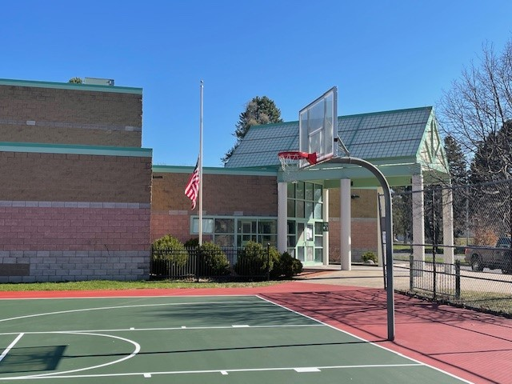
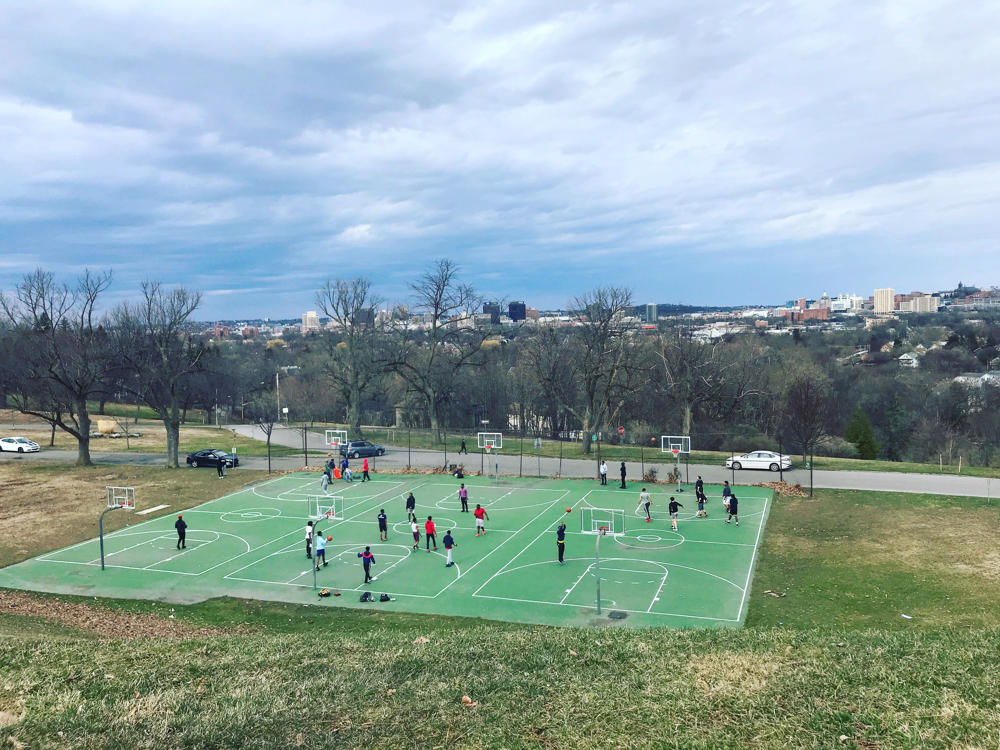

McChesney Park Basketball Court
Photo credit: City of Syracuse

Huntington Park Basketball Court
Photo credit: Syracuse.com

Onondaga Park Basketball Court
Photo credit: Syracuse.com
A data analysis of Syracuse's park system shows basketball courts received major upgrades between 2021 and 2022, but records for 45% of facilities are missing, raising questions about how the city tracks its recreational infrastructure.

Photo credit: City of Syracuse
Photo credit: Syracuse.com

Photo credit: Syracuse.com
Total Courts
Basketball Courts
Courts Improved 2021-22
Missing Records
Syracuse maintains 55 public athletic courts across its park system, with basketball facilities representing the clear priority. Of all court facilities, 30 are basketball courts, accounting for 54.5% of the city's athletic infrastructure. Tennis courts come in second with nine facilities, followed by eight tennis/pickleball combination courts that reflect growing interest in racquet sports.
This basketball-heavy allocation reflects both community preferences and historical investment patterns. The concentration of basketball facilities demonstrates where the city has focused its recreational infrastructure over time, creating a network of courts distributed across different neighborhoods.
"Public courts are where communities come together. It's not just about basketball. It's where kids learn discipline, where families gather on weekends, where neighborhoods build identity."
- Coach Pervis Patrick
The data reveals a concentrated investment period between 2021 and 2022, when Syracuse upgraded 17 courts, more than any other period on record. In 2022 alone, 10 courts received improvements, following the seven courts improved in 2021.
This surge aligns with federal American Rescue Plan Act funding that became available to municipalities during the pandemic. Syracuse received $123 million in ARPA funds.
According to Syracuse's 2023 Parks Master Plan, the city identified outdoor recreation facilities as a key priority following the COVID-19 pandemic. The importance of facilities management has been emphasized by city leadership.
"We need strong experience in facilities management and capital planning in departments across City government."
- Syeisha Byrd, Syracuse Commissioner of Parks and Recreation
Public courts serve as gathering spaces for pickup games, informal mentorship between older and younger players, and community events.
The investment is visible at facilities like Kirk Park, Schiller Park, and Barry Park, which received new surfaces and backboards.
Quality facilities signal investment in neighborhoods and provide safe spaces for recreation.
"Not every kid can afford a gym membership or travel team fees. Public courts are the great equalizer. They're free, they're accessible, and they give every kid a chance to develop their game and be part of something bigger."
- Coach Pervis Patrick
However, the data also reveals a significant documentation gap. Of Syracuse's 55 courts, 23 have no recorded improvement year, representing 45% of all facilities. This raises questions about how the city tracks maintenance and capital improvements across its recreational infrastructure.
Cities typically use maintenance records to schedule preventive repairs, allocate capital budgets, and ensure equitable distribution of improvements across neighborhoods.
Rochester's parks department maintains a public-facing database showing improvement histories. Buffalo recently launched a similar system.
"When you invest in public courts, you're investing in the fabric of a community. These aren't just concrete and hoops. They're where character gets built, where friendships form, where kids learn what it means to work hard and be part of a team."
- Coach Pervis Patrick
The data shows Syracuse has invested meaningfully in basketball infrastructure, particularly during the 2021-2022 period. But with 30 courts serving organized teams, recreational leagues, and open public use simultaneously, the question becomes whether quantity and quality improvements alone can solve access challenges.
For data-driven governance, comprehensive tracking systems provide transparency and enable informed decision-making. As Syracuse continues investing in recreational infrastructure, improving documentation of facility conditions and improvement histories could help ensure equitable resource allocation.